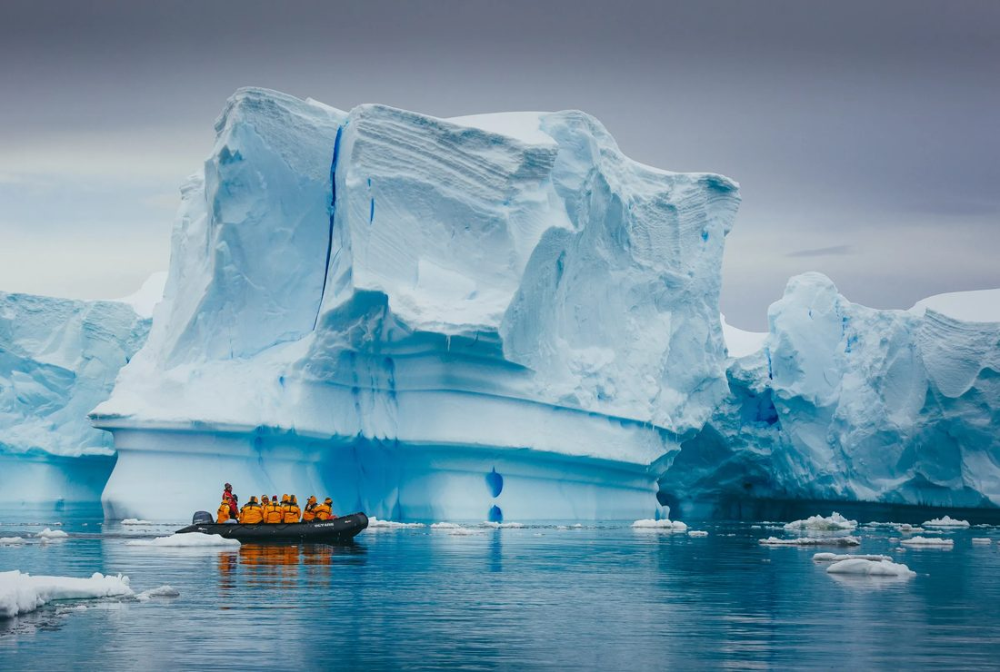

Wordlist — people's lives & exploration
These are the key words for today's unit. Choose the correct definition for each one.
Words 1–10
Words 11–20
Reading — James Cook, explorer and traveller
Read the passage, then complete the tasks below it.
James Cook, explorer and traveller
James Cook travelled to many distant parts of the world and made important maps.
James Cook was a British explorer who travelled to many parts of the world in the 18th century. At that time, travelling to distant countries was slow and difficult. Ships could spend months at sea, and sailors often faced storms and bad weather.
Cook was born in England in 1728. He came from a poor family and left school when he was young. He later worked on ships and learned how to sail. He became interested in maps and navigation and soon became a skilled sailor.
During his career, Cook made several long journeys. He travelled to the Pacific Ocean and visited places such as Australia, New Zealand and Hawaii. He carefully studied the coastlines of these areas and made detailed maps. His maps helped other sailors travel more safely.
Cook was also interested in the people he met during his journeys. He wrote about their cultures, food and daily lives. He often worked with local people and learned from them.
Cook's journeys were not always easy. His sailors had to deal with strong winds, illness and long periods away from home. However, Cook continued to explore because he wanted to learn more about the world.
James Cook died in Hawaii in 1779. Today, he is remembered as an important explorer and mapmaker. His journeys helped Europeans learn more about the Pacific and the countries around it.
Vocabulary — match the words with their meanings.
1. distant
2. skilled
3. journey
4. coastline
5. illness
6. explore
Complete the sentences.
1. Australia was a country for Cook to travel to.
2. Cook was a sailor.
3. The ship's took several months.
4. Cook studied the of Australia.
5. Some sailors suffered from .
Comprehension questions — choose the correct answer.
1. Where was James Cook born?
2. What did Cook learn when he worked on ships?
3. What did Cook make during his journeys?
4. What problems did his sailors face?
Answer in your own words.
5. Why were journeys difficult in Cook's time?
6. Why did Cook travel to different parts of the world?
7. What did Cook learn about the people he met?
Answers may vary, but they should be based on information from the text.
Places that are nearly impossible to survive
Look at each photo. What makes this place so dangerous or difficult for humans to survive in? Write a mini text of at least 30 words under each photo.
Amazon Rainforest
What makes the Amazon Rainforest nearly impossible to survive?
Sahara Desert
What makes the Sahara Desert nearly impossible to survive?

Antarctica
What makes Antarctica nearly impossible to survive?
Speaking warm-up — travelling
Before we read about Freya Stark, answer these questions about travelling. Jot down a few notes if it helps, then record your answer. You only get one attempt per question, so make sure you're ready before you start recording.
Useful words: adventurous · relaxing · exhausting · eye-opening · stressful · rewarding
Useful phrases:
- "I'm a big fan of travelling because…"
- "To be honest, I'm not that keen on it, since…"
- "What I enjoy most about it is…"
- "It really depends on the destination, but…"
Useful words: independence · companionship · flexibility · shared memories · self-reliant
Useful phrases:
- "Personally, I'd rather travel… because…"
- "Travelling alone gives you the freedom to…"
- "Travelling with others means you can…"
- "It depends on the trip, but generally…"
Useful words: remote · untouched · off the beaten track · bucket list
Useful phrases:
- "I've always wanted to visit… because…"
- "There's a place called… that's on my bucket list."
- "I'm drawn to remote places because…"
Useful words: first-hand experience · broaden your horizons · practical skills · cultural awareness
Useful phrases:
- "Definitely — travelling teaches you…"
- "It broadens your horizons because…"
- "You gain first-hand experience of…"
Useful words: thrilling · risky · out of my comfort zone · well-prepared
Useful phrases:
- "I think I would, as long as…"
- "Honestly, that's a bit out of my comfort zone because…"
- "It sounds thrilling, but I'd need to be well-prepared."
Reading — Freya Stark, explorer and writer
Read the passage, then complete the flow chart and questions below.
Freya Stark, explorer and writer
Freya Stark travelled to many areas of the Middle East, often alone.
Freya Stark was an explorer who lived during a time when explorers were regarded as heroes. She travelled to distant areas of the Middle East, where few Europeans — especially women — had travelled before. She also travelled extensively in Turkey, Greece, Italy, Nepal and Afghanistan.
Stark was born in Paris in 1893. Although she had no formal education as a child, she moved about with her artist parents and learned French, German and Italian. She entered London University in 1912, but at the start of World War I, she joined the nurse corps and was sent to Italy. After the war, she returned to London and attended the School of Oriental Studies. Her studies there led to extensive travel in the Middle East, enabling her to eventually become fluent in Persian, Russian and Turkish.
Stark became well known as a traveller and explorer in the Middle East. She travelled to the Lebanon in 1927 at the age of 33 when she had saved enough money, and while there, she studied Arabic. In 1928, she travelled by donkey to the Jebel Druze, a mountainous area in Syria. During another trip, she went to a distant region of the Elburz, a mountain range in Iran, where she made a map. She was searching for information about an ancient Muslim sect known as the Assassins, which she wrote about in Valley of the Assassins (1934), a classic for which she was awarded a Gold Medal by the Royal Geographic Society. For the next 12 years, she continued her career as a traveller and writer, establishing a style which combined an account of her journeys with personal commentary on the people, places, customs, history and politics of the Middle East.
adapted from Science and its times, 2000
Flow-chart completion.
Choose NO MORE THAN TWO WORDS AND/OR A NUMBER from the passage for each answer.
Born in Paris in 1893
↓
First formal education at
↓
Worked as a in Italy
↓
Studied at School of Oriental Studies
↓
Travelled to the Lebanon, where she learned
↓
Made a journey to the Syrian mountains on a
↓
In 1934, won a for a book
↓
Spent a further in the Middle East
Short-answer questions.
Choose NO MORE THAN TWO WORDS AND/OR A NUMBER from the passage for each answer.
1. What word did people use to describe explorers when Stark was alive?
2. What historical event interrupted Stark's university education?
3. What did Stark produce while travelling in Iran, in addition to a book?
4. What group of people did Stark research in Iran?
Day 4 complete! 🎉
All 5 tasks done. Come back tomorrow for the next day.